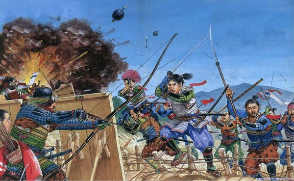

La era Sengoku, también conocida como el Período de los Estados en Guerra, es uno de los capítulos más fascinantes y turbulentos en la historia de Japón. Se extiende desde finales del siglo XV hasta principios del siglo XVII y se caracteriza por un intenso período de conflictos militares, intrigas políticas y luchas por el poder entre los señores feudales, conocidos como daimyōs. Durante esta época, Japón experimentó una profunda fragmentación política, dando lugar a numerosos clanes rivales que luchaban por el control del país. La era Sengoku no solo fue un período de guerra, sino también un tiempo de grandes cambios sociales, económicos y culturales que dejaron un legado perdurable en la historia japonesa.
La Era Sengoku
La era Sengoku se desarrolló en un período de profundos cambios en la estructura política y social de Japón. Antes de este período, Japón estaba gobernado por el shogunato Ashikaga, que había comenzado su declive en el siglo XIV debido a conflictos internos y a la debilidad del gobierno central. Esta situación llevó a una descentralización del poder, con los señores feudales regionales, conocidos como daimyōs, fortaleciendo su autoridad y autonomía.

Guerra Ōninw - Periodo Sengoku - Japón 1467 - 1477
Además, el período Sengoku coincidió con la llegada de la influencia europea a través de los primeros contactos con los misioneros y comerciantes portugueses y españoles. Esta introducción de nuevas tecnologías, como las armas de fuego, así como el intercambio cultural, añadió una capa adicional de complejidad a la situación política en Japón.
La fragmentación del gobierno central y el debilitamiento del shogunato Ashikaga crearon un escenario propicio para la competencia entre los daimyōs por el control del país. Esta lucha por el poder, combinada con el surgimiento de nuevas estrategias militares y tácticas de guerra, caracterizó el tumultuoso período conocido como la era Sengoku.